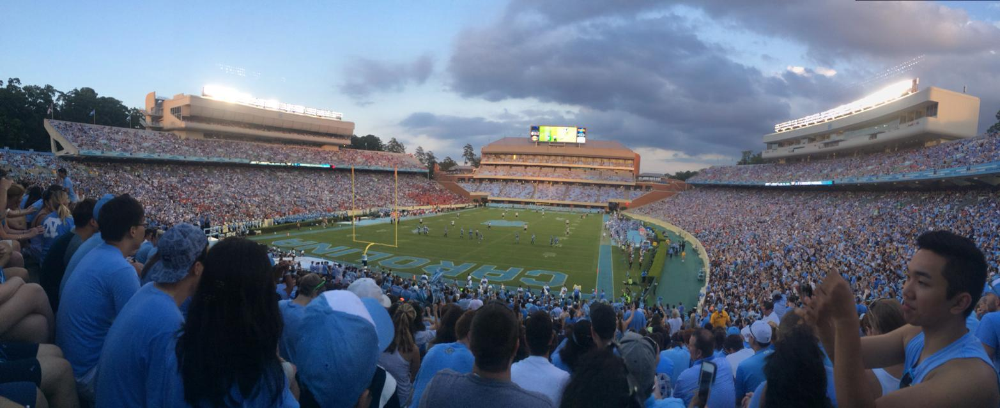
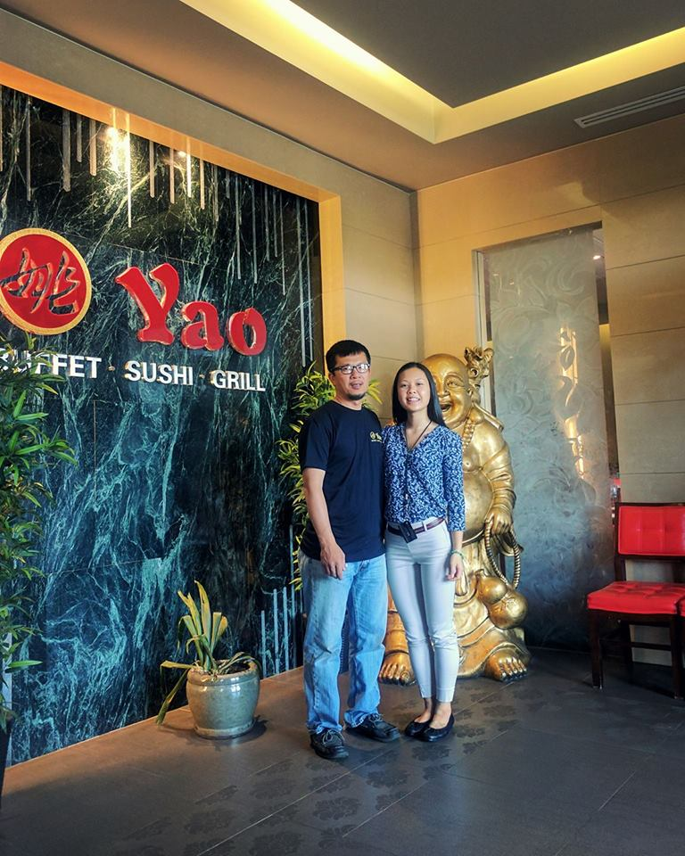

Education
University of North Carolina at Chapel Hill
Major: Statistics and Analytics
Relevant coursework: Time series analysis, optimization, data science, machine learning, decision analysis, stochastic modeling
Minor: Geography
Relevant coursework: Remote sensing, classification, image statistics and imagee processing, data visualization
Experience
Projects
Durham County Crimes App
- Used R package "Shiny" to build an interactive web app that allows users to view all crimes that happened in Durham County in 2016.
- Users can select various crimes to view summary statistics such as what time of the day the crime is most likely to occur and total crime counts for 2016
- Also created maps on QGIS and imported these into Shiny, for aesthetic purposes.
Dead Sea: Decreasing Water Levels
- Investigated changing water levels and NDVI values of the Dead Sea using Landsat 7 ETM+ imagery
- Incorporated the r.report plugin in QGIS to generate pixel counts that suggests changes in landscape over time, created graphs to help visualize this change
Mauna Loa CO2 Emissions
- Utilized ITSM to perform time series analysis on 8 years of data to predict average level of CO2 emissions from the Mauna Loa Observatory for the month of April.
- Achieved 1st place in competition on accuracy of predicted emissions ARMA mode
Languages
- R
- MatLab
- SAS
- Octave
- Java
- Python
- HTML and CSS
Software
- QGIS
- ArcMap
- ENVI
- ITSM
Employment
Yao Buffet Sushi Grill, May 2012 - Aug 2017
Worked in a family restaurant business for several years.
Here's a link to our website: Yao Buffet Sushi Grill
Mathnasium of Chapel Hill, Jun 2016 - Feb 2017
Tutored students K-12 in math and ran summer camps that engaged students in the practical applications of geometry.
“And will you succeed? Yes you will indeed! (98 and 3/4 percent guaranteed.)”